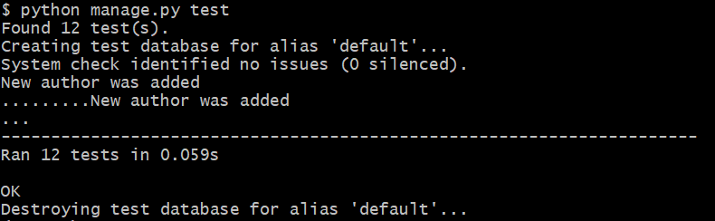

Patch тесты
class UpdateTest(APITestCase):
@classmethod
def setUpTestData(cls):
Room.objects.create(name='Малый 1', capacity=45)
Room.objects.create(name='Большой 2', capacity=70)
def test_update_capacity(self):
url = reverse('library:room', args=[1])
data = {"capacity": 30}
response = self.client.patch(url, data, format='json')
self.assertEqual(response.status_code, status.HTTP_200_OK)
data['name'] = 'Малый 1'
data['id'] = 1
data['books'] = []
self.assertEqual(response.data, data)
def test_update_name(self):
url = reverse('library:room', args=[1])
data = {"name": 'Новый зал'}
response = self.client.patch(url, data, format='json')
self.assertEqual(response.status_code, status.HTTP_200_OK)
data['capacity'] = 45
data['id'] = 1
data['books'] = []
self.assertEqual(response.data, data)
def test_update_name_and_capacity(self):
url = reverse('library:room', args=[2])
data = {"name": 'Новый зал', 'capacity': 50}
response = self.client.patch(url, data, format='json')
self.assertEqual(response.status_code, status.HTTP_200_OK)
data['id'] = 2
data['books'] = []
self.assertEqual(response.data, data)
